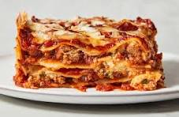

Home
Lasagna

Ingredients
- 12 lasagna noodles
- 2 cups ricotta cheese
- 3 cups shredded mozzarella cheese
- 1 cup grated Parmesan cheese
- 2 cups marinara sauce
- 1 lb ground beef or sausage
- 1 egg
- 2 cloves garlic, minced
- Salt and pepper to taste
- Fresh basil (optional)
- Olive oil
- Water
Instructions
- Preheat the oven to 375°F (190°C).
- Cook the lasagna noodles according to package instructions. Drain and set aside.
- In a skillet, heat olive oil and sauté garlic. Add ground beef or sausage and cook until browned. Drain excess fat.
- In a bowl, mix ricotta cheese, egg, salt, pepper, and half of the Parmesan cheese.
- Spread a layer of marinara sauce on the bottom of a baking dish.
- Layer 4 noodles, half of the ricotta mixture, half of the meat mixture, and a third of the mozzarella cheese.
- Repeat layers, finishing with noodles, marinara sauce, and remaining mozzarella and Parmesan cheese on top.
- Cover with foil and bake for 25 minutes. Remove foil and bake for an additional 15 minutes until cheese is bubbly.
- Let it cool for 10 minutes before serving. Garnish with fresh basil if desired.
- Enjoy your delicious lasagna!
Home